5. Эмбриологические доказательства
Содержание раздела:
- Свидетельства эволюции в индивидуальном развитии организмов
- Эво-дево: следы макроэволюции
- Гомеозис и не только
- Безнадежны ли "обнадеживающие монстры?
- Монстры и макроэволюция
1. Свидетельства эволюции в индивидуальном развитии организмов
Однажды после публичной лекции великого биолога Джона Холдейна некая дама заявила: "Не могу себе представить, чтобы из одноклеточного существа развился такой сложнейший организм, как человеческий, состоящий из триллионов клеток, даже если у него были на это миллиарды лет". На что Холдейн ответил: "Мадам, вы сами это проделали. И у вас ушло на это всего девять месяцев".
Многоклеточные организмы развиваются из единственной клетки - оплодотворенного яйца. В геноме многоклеточных нет "чертежа" взрослого организма, а есть только "программа поведения", работающая на уровне индивидуальных клеток. Многоклеточный организм формируется в результате согласованного поведения делящихся клеток эмбриона. До сих пор сохранились виды организмов, представляющие собой фактически переходные стадии между одноклеточными и многоклеточными, у которых в ходе жизненного цикла индивидуальные клетки самоорганизуются в сложные многоклеточные структуры. О самоорганизации сложных структур в результате согласованного поведения индивидуальных клеток см. в заметках:
Способность к сложному коллективному поведению может возникнуть благодаря единственной мутации
Амёбы-мутанты не позволяют себя обманывать
Зачем цианобактерии вьют из себя веревки
Микробиологи утверждают: многоклеточность — сплошное жульничество
«Чувство кворума»: принятие коллективных решений в макро- и микромире)
Очень важно понять, что эволюционируют не взрослые организмы, а генетические программы их индивидуального развития (онтогенеза). В ходе эволюции меняются не сами морфологические признаки, а генетически обусловленные алгоритмы их формирования в онтогенезе. Данные эмбриологии свидетельствуют о том, что алгоритм развития каждого вида живых организмов является модификацией алгоритмов развития его предков. Генетическая программа онтогенеза многоклеточных животных, как ни странно, сама по себе намного проще (содержит меньше информации), чем получающийся на ее основе взрослый организм. Новая информация "самозарождается" в ходе онтогенеза (в этом суть процесса самоорганизации). Чтобы понять эволюцию многоклеточных, необходимо четко представлять себе основные принципы онтогенеза (в доходчивой форме они описаны здесь). Возможные (допустимые, "разрешенные") пути эволюционных преобразований определяются не столько строением взрослого организма, сколько устройством его онтогенеза.
Понимание процессов самоорганизации имеет ключевое значение для понимания эволюции. Все мы неоднократно наблюдали такой яркий пример самоорганизации, как образование поразительно красивых и сложных морозных узоров на стекле. При этом у нас на глазах из "простого" (из хаотического движения молекул водяного пара) рождается "сложное" - изысканные ледяные картины, достойные кисти лучших художников. Мы понимаем, что эти узоры рисует не дед Мороз, они образуются сами. Но где они "закодированы", где хранится чертеж или программа, на основе которой они формируются? По-видимому, эта программа "закодирована" в физических свойствах молекулы воды, от которых зависит ход кристаллизации, а также в условиях среды (температура воздуха, текстура стекла и т.п.). Примерно таким же образом и программа развития организма закодирована в геноме и окружающей среде (нужно помнить, что строение взрослого организма зависит отнюдь не только от генов, но и от условий среды, в которой происходит развитие). Мы смиряемся с тем очевидным фактом, что и в ходе образования ледяных узоров, и в ходе развития организма происходит самопроизвольное образование новой информации (на основе простой программы самоорганизуется нечто значительно более сложное). Мы не считаем это чудом (хотя на чудо это очень похоже!) и не привлекаем сверхъестественные силы для объяснения каждой снежинки и каждого онтогенеза. Все сказанное в полной мере приложимо и к эволюционному развитию жизни. Наследственная изменчивость и дифференциальное размножение - это просто еще один механизм самоорганизации, благодаря которому из первоначальных простейших существ сами собой с неизбежностью развиваются те самые "endless forms most beautiful and most wonderful" (бесчисленные прекрасные и удивительные формы), которые населяют нашу планету. Подобно ледяным узорам, "закодированным" в молекуле воды и текстуре стекла, все это поразительное многообразие жизни было "закодировано" в самых первых живых существах, в их ДНК или РНК, и в условиях среды, где им предстояло эволюционировать.
Индивидуальное развитие многоклеточных организмов далеко не всегда, но довольно часто повторяет ("рекапитулирует") отдельные этапы его эволюционной истории. Так получается потому, что мутации, меняющие ранние этапы развития, чаще оказываются вредными и реже - полезными, чем мутации, затрагивающие более поздние этапы. Чем раньше в ходе эволюции появился признак, тем больше вероятность, что какие-то другие жизненно важные признаки организма уже успели стать зависимыми от него ("подогнались", "притерлись" к нему под действием отбора), и поэтому он не может быть изменен без ущерба для целого. Напротив, новые признаки часто очень пластичны, потому что все прочие признаки в ходе индивидуального развития формируются независимо от этого нового признака. Поэтому часто самый простой способ для эволюции "создать" новый признак состоит в том, чтобы "пристроить" программу его формирования в самый конец уже имеющейся, устоявшейся программы.
 |
| Месячный эмбрион человека при внематочной беременности. Видны зачатки жаберных дуг и хвост. |
У всех позвоночных животных наблюдается значительное сходство зародышей на ранних стадиях развития: форма тела, зачатки жаберных дуг, хвост, один круг кровообращения и т. д. (закон зародышевого сходства Карла Максимовича Бэра). Однако по мере развития сходство между зародышами различных систематических групп постепенно стирается и начинают преобладать черты, свойственные их классам, семействам, родам, и, наконец, видам.
Эволюционные изменения могут касаться всех фаз онтогенеза, то есть могут приводить к изменениям не только зрелых организмов, но и эмбрионов, даже на первых этапах развития. Тем не менее, более ранние фазы развития должны отличаться большим консерватизмом, чем более поздние, так как изменения на более ранних этапах развития в свою очередь должны привести к большим изменениям в процессе дальнейшего развития. Например, изменение типа дробления вызовет изменения в процессе гаструляции, равно как и во всех следующих стадиях. Поэтому изменения (мутации), проявляющиеся на ранних этапах, чаще оказываются летальными, чем изменения, касающиеся более поздних периодов онтогенеза.
Таким образом, ранние стадии развития изменяются относительно редко, а значит, сравнительное изучение эмбрионов разных видов может быть источником сведений о степени эволюционного родства.
В 1837 году эмбриолог Карл Райхерт выяснил, из каких зародышевых структур развиваются квадратная и сочленовная кости в челюсти рептилий. У зародышей млекопитающих обнаружены те же структуры, но они развиваются в молоточек и наковальню среднего уха (см.: Н.Н.Иорданский. Эволюция жизни. Глава 3). Палеонтологическая летопись также подтверждает происхождение частей уха млекопитающих из костей челюсти рептилий.
Изучение развития зародышей современных организмов помогает реконструировать ход эволюции и даже позволяет предсказывать, какие палеонтологические находки могут быть сделаны в будущем. Так, у предков зверей — зверозубых рептилий — была только одна слуховая косточка (стремечко), а молоточек (=сочленовная кость) и наковальня (=квадратная кость) образовывали челюстной сустав. То же самое наблюдается и у самых примитивных древних млекопитающих. У современных млекопитающих в ходе эмбрионального развития эти косточки сначала, как и у далеких предков, прилегают к нижней челюсти (на этом этапе они неотличимы от сочленовной и квадратной костей эмбрионов рептилий), а затем отделяются от нее. Отделение происходит в два этапа: сначала слуховые косточки отделяются от боковой поверхности нижней челюсти, но остаются связаны с ней спереди посредством меккелева хряща (этот хрящ, кстати, представляет собой остаток первичной, изначальной нижней челюсти позвоночных; у акул, например, вся нижняя челюсть образована меккелевым хрящом). На втором этапе исчезает и это переднее соединение: меккелев хрящ у взрослых млекопитающих рассасывается. Таким образом, эмбриональное развитие млекопитающих подтверждает выводы сравнительной анатомии о происхождении молоточка и наковальни млекопитающих от костей челюстного сустава рептилий.
На основании этих фактов свыше 30 лет назад была выдвинута гипотеза, согласно которой в эволюции среднего уха млекопитающих должна была быть промежуточная стадия — примерно такая же, как в эмбриональном развитии современных зверей (Allin, E. F. 1975. Evolution of the mammalian middle ear. // J. Morphol. 147, 403–438). Эта гипотеза блестяще подтвердилась в 2007 году, когда в Китае был найден скелет млекопитающего, жившего 125 млн лет назад (в раннемеловую эпоху) и получившего название яноконодон (Yanoconodon allini). Молоточек и наковальня у яноконодона уже отделены от нижней челюсти с боков, но еще прикреплены к ней спереди посредством окостеневшего меккелева хряща ( см.: Новая палеонтологическая находка проливает свет на раннюю эволюцию млекопитающих)..
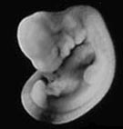 |
| Эмбрион кота
(слева) и человека (справа) на стадии, когда хорошо видны жаберные дуги, хвост, зачатки передних и задних конечностей. С сайта talkorigins.org |
У эмбрионов многих видов змей и безногих ящериц (например, веретеницы ломкой) развиваются зачатки конечностей, но затем они рассасываются.[см. статью о редукции конечностей у рептилий] Аналогично, у китов и дельфинов нет задних конечностей, но у эмбрионов китообразных начинают расти задние ноги, развиваются кости, нервы, сосуды, а затем все эти ткани рассасываются (Amasaki, H., et al. Developmental changes of the fore- and hind-limbs in the fetuses of the southern minke whale, Balaenoptera acutorostrata; Sedmera, D., et al. On the development of Cetacean extremities: I. Hind limb rudimentation in the Spotted dolphin Stenella attenuata)
 |
| Эмбрион дельфина
Stenella attenuata. Видны зачатки передних (f) и задних (h) конечностей. Из первых разовьются плавники, вторые исчезнут. С сайта talkorigins.org |
У человеческих эмбрионов на ранних этапах развития (4-5 недель) есть заметный хвост с 10-12 развивающимися хвостовыми позвонками, длина которого составляет более 10 % длины эмбриона (Fallon, J. F., dl, B. K.&nbs Evidence of a role for cell death in the disappearance of the embryonic human tail). Развиваются не только позвонки, но и спинной мозг, и ряд других структур. К восьмой неделе шесть крайних позвонков отмирают (в результате смерти клеток). 5-й и 4-й хвостовые позвонки уменьшаются, прочие структуры также отмирают и уменьшаются . Макрофаги утилизируют разрушающиеся клетки (Sapunar, D., et al. Morphological diversity of dying cells during regression of the human tail). У взрослых людей остается 4 хвостовых позвонка, которые образуют копчик.
Современные сумчатые и плацентарные млекопитающие живородящи, но их предки были яйцекладущими (подобно современным ехиднам и утконосам). У плацентарных в эмбриональном развитии не осталось явных следов скорлупы или специальных приспособлений для ее пробивания, однако в ходе развития зародышей сумчатых на короткое время возникает и потом рассасывается яичная скорлупа, а у некоторых новорожденных сумчатых (коала, бандикуты и др.) имеется рудиментарный яйцевой зуб (Tyndale-Biscoe, H. and Renfree, M. 1987. Reproductive Physiology of Marsupials).
Любимым аргументом антиэволюционистов является тот факт, что Эрнст Геккель, более ста лет назад нарисовавший свой знаменитый рисунок, демонстрирующий сходство эмбрионов разных классов позвоночных, на самом деле сильно идеализировал реальную картину (что, впрочем, в те времена не считалось таким уж страшным прегрешением - ведь он рисовал просто схему, а схемы всегда идеализированы). Но какое нам дело сейчас, спустя полтора века, до рисунков Геккеля? Они - не более чем исторический курьез, и их неточность никоим образом не влияет на силу и достоверность эмбриологических доказательств эволюции. Посмотрите хотя бы выше на фотографии эмбрионов человека, кота и дельфина. Впрочем, и научная недобросовестность Геккеля вовсе не является доказанным фактом, о чем свидетельствую данные, приведенные в статье R.J.Richards, 2009. Haeckel’s embryos: fraud not proven.
Дополнительный пример 1. Под Подкласс двусторонне-симметричных "неправильных" морских ежей (Irregularia) произошел от обычных "правильных" радиально-симметричных морских ежей (подкласс Regularia) в юрском периоде. Эволюционный переход от правильных ежей к неправильным, начавшийся около 170 и закончившийся около 145 млн лет назад, детально документирован в палеонтологической летописи (см. А.Н.Соловьев, А.В.Марков. Ранние этапы эволюции неправильных морских ежей). При этом у всех современных неправильных ежей личинка сначала превращается в маленького радиально-симметричного ежика, строение которого во всех основных чертах воспроизводит морфологию правильных морских ежей. В ходе дальнейшего развития постепенно развивается двусторонняя симметрия и все основные отличительные признаки подкласса Irregularia.
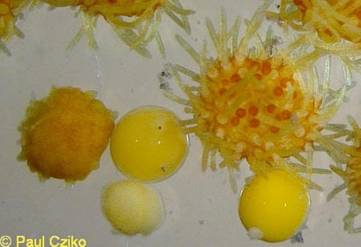
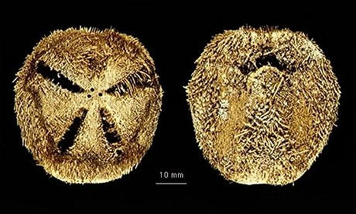
"Новорожденные" неправильные морские ежики рода Abatus (слева) имеют радиальную симметрию и по своему строению в целом соответствуют диагнозу подкласса Regularia. Взрослые Abatus (справа), как и все представители подкласса Irregularia, имеют двустроннюю симметрию.
 |
| Ископаемый морской еж Pygaster (юрский период) - одна из переходных форм между правильными и неправильными морскими ежами. Преобладает радиальная симметрия, но перипрокт (анальное отверстие) уже сильно смещен назад (на фото - вниз), что придает ежу элементы двустронней симметрии. В индивидуальном развитии современных неправильных морских ежей приобретение двусторонней симметрии тоже начинается со смещения перипрокта из центра верхней поверхности в заднем направлении. |
См. также замечательную подборку фактов на англ. языке с сайта talkorigins.org.
2. Эво-дево: следы макроэволюции
Креационисты нередко признают образование новых видов, но решительно отрицают существование макроэволюции, то есть возникновения таксонов (групп организмов) надвидового ранга. Действительно, трудно спорить с тем фактом, что под действием отбора в популяции могут появиться группы особей, резко различающиеся по множеству мелких признаков, а иногда и утрачивающие способность к скрещиванию между собой. Об этом свидетельствует и богатый опыт селекции растений, животных и микроорганизмов (см. раздел "Изменения видов при доместикации: от искусственного отбора к естественному"), и лабораторные эксперименты, и наблюдения над природными популяциями (см. раздел "Наблюдаемая эволюция").
Мы легко можем представить себе изменчивость особей одного вида по размерам, форме, окраске (вспомним хотя бы про породы собак), но вот перестройки плана строения организмов, то есть числа, положения и идентичности их органов, для нас не столь уж очевидны. Каким же образом могут возникать глубокие различия в строении или поведении организмов, позволяющие говорить о появлении новых родов, семейств, классов, типов, то есть о макроэволюции? На первый взгляд, происхождение таких крупных новаций кажется неразрешимой загадкой. Для того, чтобы её разгадть, нам надо ответить на три вопроса:
- Как и почему может измениться план строения организмов?
- Способны ли организмы, имеющие необычный план строения, выживать и размножаться в природе?
- Действительно ли известные нам механизмы перестроек плана строения имеют отношение к происхождению надвидовых таксонов, т.е. к макроэволюционным событиям?
2.1. Гомеозис и не только
Генетикам давно известны мутации, вызывающие резкие перестройки плана строения организмов, такие как гомеозис (изменение идентичности органов) и гетеротопии (образование обычных органов в несвойственных для них местах). Впервые такая мутация – появление второй пары крыльев у плодовой мушки дрозофилы – была описана К. Бриджесом ещё в 1915 году (она получила название bithorax, см. рисунок). К концу 20 века были подробно изучены гены, регулирующие индивидуальное развитие и формирование отдельных органов у ряда модельных организмов (дрозофилы, мыши, растения арабидопсис и некоторых других). Мутации этих генов и приводят к гомеозисным эффектам, а значит – указывают на возможные причины глубоких морфологических перестроек в эволюции.
Примеры:
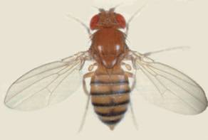
Слева: плодовая мушка Drosophila melanogaster, один из основных модельных объектов генетики животных. Справа: мутация bithorax у дрозофилы: превращение третьего сегмента груди в дубликат второго, в результате чего у мухи появляется ещё одна пара крыльев, а также второй желудок.

Мутация antennapedia у дрозофилы: вместо усиков (антенн) у мухи формируется пара ног.
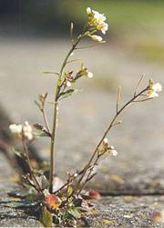
Резуховидка Таля (Arabidopsis thaliana), важнейший модельный объект генетики растений, и её цветок.
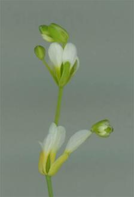
Слева: мутант Arabidopsis по гену AGAMOUS: у него не образуются тычинки и плодолистики, а сам цветок может ветвиться подобно вегетативному побегу. Справа: мутант Arabidopsis по гену APETALA1: на месте лепестков у него формируются тычинки, чашелистики превращаются в листьях, а в их пазухах развиваются цветы следующего порядка.
Итак, мутации лишь одного гена могут вызвать резкие изменения в строении дрозофилы и арабидопсиса, а значит и других организмов. Впрочем, подобные эффекты могут возникать и без изменения нуклеотидной последовательности гена – достаточно того, чтобы обычный ген заработал (стал экспрессироваться) в необычном месте и/или в необычное время. Иными словами, морфологические перестройки могут быть обусловлены не только генетическими, но и так называемыми эпигенетическими механизмами, связанными с управлением и регуляцией работы генов; примеры таких перестроек будут приведены ниже. Итак, появление организмов с измененным планом строения – это, можно сказать, «дело техники».
2.2. Безнадежны ли «обнадёживающие монстры»?
В 1940 году Рихард Гольдшмидт высказал гипотезу о том, что макроэволюция есть результат системных мутаций (макромутаций), то есть наследственных изменений, затрагивающих всю систему генотипа и несводимых к изменениям отдельных генов. Именно он ввел в обиход яркий образ «обнадёживающего монстра» (hopeful monster), то есть носителя такой макромутации. Долгое время концепция Гольдшмидта находилась на периферии внимания ученых. Интерес к ней оживился лишь в 1990-е годы, а сейчас тема hopeful monsters приобрела научную респектабельность.
Называя носителей эволюционных новаций «монстрами» (хоть и «обнадеживающими»), Гольдшмидт понимал, что этим необычным существам в жизни должно быть нелегко. Речь ведь идет о тяжелых уродствах, которые, как кажется, не оставляют организмам шансов на выживание и размножение. Тем не менее в природе иногда встречаются популяции, в значительной мере состоящие из «монстров», и ученые знают о них очень давно.
Пример 1. Пелории у льнянки.
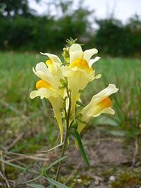Льнянка обыкновенная (Linaria vulgaris) – невысокое растение с красивыми желто-белыми цветками, которое нередко можно встретить на пустырях, опушках, на песчанных дюнах и по обочинам дорог. По строению цветков льнянка очень похожа на львиный зев, с которым она состоит в близком родстве. Для них обоих характерны отчетливо двугубые цветки с длинным шпорцем.
В 1742 году Магнус Сёберг (M. Ziöberg), студент из Уппаслы, обнаружил на одном из островов к северо-востоку от Стокгольма заросли льнянки с радиально-симметричными цветками, несущими пять шпорцев. Когда выдающийся ботаник Карл Линней увидел это растение в гербарии, он был настолько поражен, что поначалу даже заподозрил подделку. Тщательная проверка показала, однако, что этот экземпляр был именно льнянкой, но с крайне своеобразными цветками, для которых Линней ввёл специальный термин «пелория» (т.е.по-гречески «монстр»). По его настоянию Сёберг совершил специальную поездку к месту своей находки, доставил оттуда в Уппсалу живые экземпляры странной льнянки, которые были высажены в университетском ботаническом саду. Линней же посвятил пелориям специальную диссертацию, опубликованную в 1744 году.
 |
| Пелорический цветок льнянки |
| 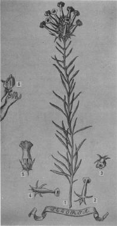 |
| Рисунок пелории у льнянки из диссертации К. Линнея (рисунок из статьи Gustafsson, 1979) |
Но была и более важная причина. Как и его современники, шведский ботаник был последовательным креационистом («Столько насчитываем видов, сколько их изначально создало Бесконечное Существо» - писал он в «Философии ботаники»), но открытие пелорических цветков заставило его задуматься об изменяемости видов. Линней предположил, что такие цветки появляются из-за опыления льнянки чужой пыльцой – и тем самым вынужден был рассмотреть возможность появления в природе нового вида.
| 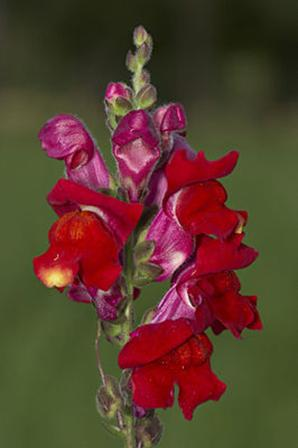 |
| Львиный зев большой (Antirrhinum majus), ещё один модельный объект генетики развития растений) |
Та популяция на острове близ Стокгольма, в которой Сёберг нашел монструозные цветки, существует и по сей день, что позволяет исследовать этот феномен современными методами. П. Кубас, К. Винсент и Э. Коэн (Cubas, Vincent, Coen, 1999) обнаружили, что пелории у льнянки возникают в результате мутации гена LCYC – близкого по своей структуре и функции к гену CYCLOIDEA, отвечающего за формирование двусторонней симметрии цветков у львиного зева Antirrhinum (модельного объекта, генетика которого изучено гораздо подробнее, чем у льнянки). Чрезвычайно интересно, однако, что такая мутация не связана с изменением последовательности нуклеотидов в гене LCYC – работа этого гена обратимо блокируется путем его метилировования, и эта блокировка передается по наследству. Иными словами, пелорические цветки образуются не в результате «классической» мутации гена как такового, а из-за изменения системы запуска и остановки его работы – то есть вследствие эпигенетической мутации. Мы видим, насколько глубокие изменения строения организмов могут быть обусловлены эпигенетическими механизмами – при этом они обходятся без «порчи» ДНК, о которой так сетуют креационисты.
Литература:
- Cubas P., Vincent C., Coen E.. 1999. An epigenetic mutation responsible for natural variation in floral symmetry. Nature. 1999 Sep 9;401(6749):157-161.
- Gustafsson Å. 1979. Linnaeus' Peloria: the history of a monster. Theor. Appl. Genetics 54: 241-248.
Пример 2. Десятитычинковые цветки пастушьей сумки.
Важнейшим модельным объектом генетики растений была и остается резуховидка Таля, более известная под своим научным названием Arabidopsis thaliana. Это невзрачная однолетняя травка, относящаяся к семейству крестоцветные, служит своего рода «растительной дрозофилой»: именно её изучение позволило сформулировать современные представления о механизмах генетического контроля развития растений. Мы уже говорили про некоторые гомеозисные мутации у Arabidopsis; они вполне могут претендовать на эволюционную роль «обнадёживающих монстров». Правда, природные популяции резуховидки, в которых «монстры» встречались бы в заметном количестве, пока неизвестны.
 |
| Соцветия пастушьей сумки с цветками дикого типа
(а) и с цветками без лепестков (b) (фото из статьи Hintz et al., 2006). |
Утрата лепестков не фатальна для пастушьей сумки, семена которой могут образовываться и после самоопыления. Как показали специальные исследования, безлепестные растения существенно не отличаются по количеству семян от растений дикого типа. Не исключено, однако, что такая гомеозисная мутация может привести к смене опылителей: из-за замены лепестков на тычинки цветок становится менее заметным для пчел, но более привлекательным для жуков и других насекомых, питающихся пыльцой. Вообще говоря, утрата околоцветника – это первый шаг на пути к ветроопылению: такую перспективу для пастушьей сумки исключать тоже нельзя.
Но каков может быть генетический механизм замены лепестков тычинками, наблюдаемой у пастушьей сумки? В поисках ответа на этот вопрос большую помощь оказывают данные по Arabidopsis, у которой механизмы контроля развития цветка изучены очень подробно. Десятитычинковые цветки у резуховидки были получены Т. Джеком с соавторами (Jack et al., 1997) путем экспериментального расширения области экспрессии (то есть активной работы) гена AGAMOUS (отвечающего за формирование тычинок и плодолистиков) на ту зону формирующегося цветка, на которой обычно располагается венчик. Вероятно, подобный механизм действует и у пастушьей сумки: эта гипотеза (а также ряд других предположений) проверяются сейчас группой Г. Тайсена.
Литература:
- Hintz M, Bartholmes C., Nutt P., Ziermann J., Hameister S., Neuffer B., G. Theiß2006. Catching a ‘hopeful monster’: shepherd’s purse (Capsella bursa-pastoris) as a model system to study the evolution of flower development. J. Exp. Bot. 57 (13):3531–3542.
- Nutt P., Ziermann J., Hintz M, Neuffer B., G. Theißen. 2006. Capsella as a model system to study the evolutionary relevance of floral homeotic mutants. Plant Syst. Evol. 259:217-235.
2.3. Монстры и макроэволюция
Предположим, что некая мутация, случившаяся десятки миллионов лет назад, привела к появлению вполне жизнеспособного «монстра». Но как нам доказать, это этот «монстр» стал родоначальником нового надвидового таксона? Заглянуть в прошлое и реконструировать ход событий на уровне генов позволяют методы молекулярной филогенетики вкупе с генетикой развития. Сопоставляя признаки разных организмов с информацией о структуре и работе генов, регулирующих их индивидуальное развитие, ученые могут строить и проверять модели, объясняющие механизмы возникновения крупных новаций. Этот подход лежит в основе нового научного направления – эволюционной генетики развития, часто называемой «эво-дево» (evo-devo). Рассмотрим его на примерах.
Пример 1. Двусторонняя симметрия цветков Iberis.
Для Arabidopsis, пастушьей сумки и подавляющего большинства других представителей семейства крестоцветных характерны цветки с лучевой симметрией венчика. Все 4 лепестка у них одинаковы по форме и размерам, и располагаются они под прямым углом друг к другу. У растений рода Iberis (иберис или стенник), однако, мы встречаем цветки с отчетливой двусторонней симметрией: два верхних лепестка у них заметно мельче, чем два нижних. Какие же причины привели к появлению таких цветков – и как нам доказать их эволюционную преемственность с цветками других крестоцветных?
 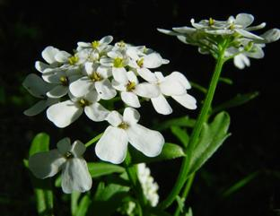
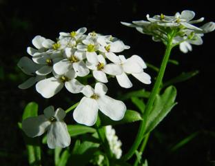
Слева: радиально-симметричные цветки резуховидки Таля (Arabidopsis
thaliana).
Справа: двусторонне-симметричные цветки ибериса (Iberis
amara)
Чтобы ответить на этот вопрос, нужно найти ген или гены, отвечающие за формирование двусторонне-симметричного венчика у Iberis. Ближайший модельный объект, по аналогии с которым можно было бы искать такие гены – это, конечно же, Arabidopsis. У него, однако, неизвестны мутации, приводящие к появлению двусторонне-симметричных цветков, а значит и гены, которые можно заподозрить в причастности к этому. Такие гены - CYCLOIDEA (CYC) и DICHOTOMA (DICH) - хорошо изучены у львиного зева Anthyrrhinum (про первый из них уже шла речь в примере с пелорическими цветками льнянки). Этот модельный объект не состоит в тесном родстве с Iberis, но именно он дал ключ к дальнейшим поискам.
Геном Arabidopsis полностью расшифрован, и в нем найден только один ген, имеющий сходную последовательность с CYC львиного зева. Этот ген, названный TCP1, в норме заметно не влияет на строение цветка резуховидки. Можно предположить, однако, что у Iberis тоже есть TCP1-подобный ген, и именно он определяет формирование двусторонней симметрии у венчика. А. Буш и С. Цахго (Busch & Zachgo, 2007) проверили эту гипотезу и подтвердили её.
У Iberis был выделен ген IaTCP1, очень близкий по своей последовательности гену TCP1 Arabidopsis. Этот ген включается на поздних этапах формирования цветка, вызывая активное деление клеток в зачатках двух нижних лепестков и, соответственно, их быстрое увеличение в размерах. В отличие от Iberis, ген TCP1 у Arabidopsis (как и CYC у львиного зева) экспрессируется на самых ранних стадиях развития цветка, когда зачатки лепестков только-только начинают формироваться. Таким образом, появление двусторонне-симметричных цветков Iberis есть результат изменения места и, главное, времени включения уже имеющегося гена.
Данный пример показывает, что весьма крупное новшество в строении цветка, позволившее выделить Iberis в самостоятельный род, возникло не ex nihilo. Если допустить версию о независимом творении этого рода, останется непонятным, почему ген IaTCP1 столь похож по своей структуре на TCP1 Arabidopsis, а они оба могут быть выявлены по сходству с CYC-подобными генами львиного зева. Конечно, мы не могли пронаблюдать сам процесс возникновения Iberis, но дошедшие до нас следы этого события недвусмысленно указывают на преемственность между этим родом и другими группами крестоцветных.
Литература
- Busch A., Zachgo S. 2007. Control of corolla monosymmetry in the Brassicaceae Iberis amara. PNAS 104 (42): 16714-16719.
Пример 2. Почему у орхидей такие разнообразные цветки?
 |
| Схема строения околоцветника орхидей на примере Dendrobium cariniferum (из статьи Mondragón-Palomino & Theißen, 2008) |
Семейство орхидные (Orchidaceae) – второе по величине среди цветковых растений. Оно насчитывает около 30 тысяч видов, поражающих разнообразием и изысканностью своих цветков. За их красотой, однако, стоит суровая утилитарность: цветок орхидеи приспособлен для опыления строго определённым опылителем (60% видов орхидей опыляются лишь одним видом животных, главным образом насекомых). Но почему именно у орхидных (а не у лилейных, например) появлось такое разнообразие цветков? Ответ на этот вопрос дают недавние работы М. Мондрагон-Паломино с соавторами (Mondragón-Palomino & Theißen, 2008, 2009; Mondragón-Palomino, 2009), проливающие свет и на происхождение этого огромного семейства.
При всем своем разнообразии цветки орхидей имеют сходный план строения: как правило, их трудно перепутать с цветками растений из других семейств. Для подавляющего большинства орхидей характерна отчетливая двусторонняя симметрия цветка. Околоцветник всегда состоит из шести элементов, расположенных в два круга по три. Обычно листочки наружного круга околоцветника (иногда неверно называемые «чашелистиками») примерно одинаковы по форме и размерам (T1-T3 на схеме внизу), в то время как средний элемент внутреннего круга (t3, губа) как правило резко отличается от двух боковых листочков (t1 и t2). Губа играет важную роль во взаимодействии с опылителем, а потому её строение бывает особенно замысловатым.
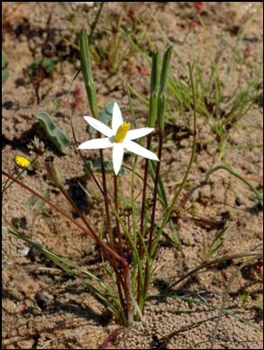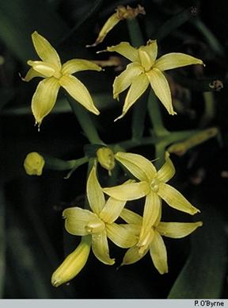
Слева: радиально-симметричный цветок у Spiloxene serrata, представителя семейства гипоксиевые (Hypoxidaceae) из Южной Африки. Справа: симметрия цветка орхидей Apostasia wallichii (подсемейство Apostasioideae) из Новой Гвинеи близка к радиальной.

 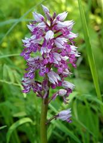
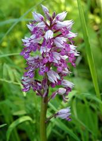
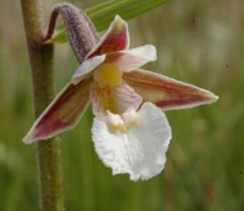
Орхидеи: ваниль (Vanilla planifolia, подсемейство Vanilloideae) из тропиков Нового Света; Венерин башмачок (Cypripedium calceolus, подсемейство Cypripedioideae), Ленинградская область; ятрышник шлемоносный (Orchis militaris, подсемейство Orchidoideae), Ленинградская область; дремлик болотный (Epipactis palustris, подсемейство Epidendroideae), Ленинградская область.
Ближайшим родственником орхидных является семейство гипоксиевые (Hypoxidaceae); к нему относятся травянистые растений с радиально-симметричными цветками. Само же семейство Orchidaceae состоит из пяти подсемейств: Apostasioideae (небольшая группа орхидей, встречающихся в Непале, Японии, Китае, Новой Гвинее и Австралии), Vanilloideae (например, ваниль), Cypripedioideae (сюда относится венерин башмачок), Orchidoideae (например, ятрышник или любка) и Epidendroideae (80% видов орхидей, в их числе дремлик, гнездовка, тайник и др.). Эти подсемейства отчетливо различаются по особенностям цветка; кроме того, их выделение подтверждено данными молекулярной филогенетики. Среди них подсемейство Apostasioideae - явно самое древнее и примитивное: венчик у его представителей почти радиально-симметричный, есть и ряд других архаичных особенностей.

Родственные связи между Hypoxidaceae и подсемействами орхидных (из статьи Mondragón-Palomino & Theißen, 2008). Филогенетическое дерево, построено путем анализа последовательностей ДНК нескольких пластидных генов (rbcL, matK, atpB), взятых у большого числа видов из всех перечисленных семейств и подсемейств. Хотя эти гены не имеют отношения к развитию цветка, полученная на их основе схема родственных связей хорошо согласуется с имеющимися представлениями об эволюции этого органа у орхидных, в частности – с тенденцией к переходу от радиальной к двусторонней симметрии околоцветника.
У всех изученных цветковых растений в регуляции образования околоцветника участвуют так называемые гены В-класса, подобные генам DEFICIENS (DEF) и GLOBOSA (GLO) львиного зева (им соответствуют APETALA3 и PISTILLATA у Arabidopsis). Мы не будем обсуждать АВС-модель и более современные концепции, объясняющие работу этих генов (подробности можно посмотреть здесь или здесь). Нам важно лишь отметить, что у многих растений имеется только один DEF-подобный и один GLO-подобный ген, которые и обеспечивают формирование у них нормальных цветков.
У орихидных, однако, дело обстоит гораздо интереснее. Как обнаружила М. Мондрагон-Паломино и её коллеги, у них есть целых четыре DEF-подобных гена, и каждый из них выполняет свою функцию. Условно говоря, гены 1 и 2 определяют, что органы, формирующиеся под их контролем, станут именно листочками околоцветника, а не листьями, тычинками или плодолистиками; ген 3 задаёт отличия элементов внутреннего круга околоцветника от наружного, а ген 4 отвечает за образование губы и ее отличия от боковых листочков. Столь сложная система регуляции и обеспечивает разнообразие морфогенетических возможностей для цветков орхидных. Мы видим, в частности, что за формирование губы у орхидей отвечает спецальный ген: не случайно некоторые морфологи трактовали эту часть околоцветника как совершенно особый орган.
Четыре DEF-подобных гена обнаружены у представителей всех четырех подсемейств орхидных (Vanilloideae, Cypripedioideae, Orchidoideae и Epidendroideae), исследованных М. Мондрагон-Паломино. У гипоксиевых же найдены только два таких гена, причем один из них близок по структуре к генам 1 и 2 у орхидей, а другой – к их генам 3 и 4. Эти данные показывают, что у предков орхидных произошло два цикла удвоения DEF-подобных генов с последующим «разделением труда» между получившимися копиями. Вероятно, такое удвоение и стало той ключевой инновацией, которая предопределила нынешнее разнообразие и эволюционный успех орхидных.
Четыре DEF-подобных гена орхидных сравнительно сильно различаются между собой по нуклеотидным последовательностям. Это неудивительно – ведь их функции различны. Важно другое: если методами молекулярной филогенетики проанализировать последовательности любого из этих генов (скажем, 1 или 3), взятые у представителей различных подсемейств орхидных, то получатся практически одинаковые филогенетические деревья, совпадающие с деревом на рисунке, приведенном выше.
Таким образом, М. Мондрагон-Паломино и её соавторы обосновали биологически осмысленную модель происхождения и эволюции крупной и своеобразной группы растений. Эта модель демонстрирует преемственность между DEF-подобными генами гипоксиевых и орхидных, хорошо согласуется с данными как сравнительной анатомии цветка, так и с результатами молекулярно-филогенетического анализа. Мы видим, что убедительный сценарий крупного макроэволюционного события – каковым, безусловно, было появление орхидных – совершенно не нуждается в привлечении каких-либо сверхестественных факторов.
Впрочем, мы пока ничего не знаем про гены, регулирующие формирование околоцветника у Apostasioideae, самой примитивной группы орхидных. Очень интересно, сколько DEF-подобных генов окажется у них. На основе имеющегося эволюционного сценария можно предположить, что этих генов окажется либо два (как у гипоксиевых), либо четыре (как у остальных орхидных), либо три (ведь апостасиевые вполне могут рассматриваться как переходная группа между двумя семействами), но никак не один и не больше четырех. Время делать ставки!
Литература:
- Mondragón-Palomino M., Theißen G. 2008. MADS about the evolution of orchid flowers. Trends in Plant Science 13(2): 51-59.
- Mondragón-Palomino M., Theißen G. 2009. Why are orchid flowers so diverse? Reduction of evolutionary constraints by paralogues of class B floral homeotic genes. Annals of Botany, advanced online access, Jan 13 2009.
- Mondragón-Palomino M., L. Hiese, A. Härter, M.A. Koch, and G. Theiβen. 2009. Positive selection and ancient duplications in the evolution of class B floral homeotic genes of orchids and grasses. BMC Evolutionary Biology 9:80